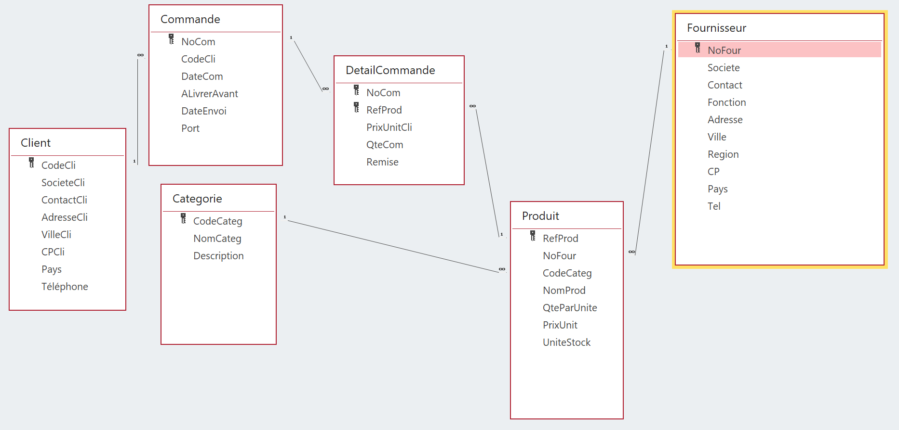

Bienvenue sur ce site qui centralise les différentes missions réalisées pour l’entreprise Kdou. Ces missions ont pour objectif d’analyser son fonctionnement actuel afin de proposer des pistes concrètes pour, à terme, améliorer ses performances globales et répondre à ses ambitions.
Nous avons donc travaillés sur la base de donnée ci dessous représentant les stocks de Kdou.

Pour répondre à ces enjeux, nous avons mené trois missions principales basées sur l’analyse approfondie des bases de données de l’entreprise. Ces missions ont permis de
nous familiariser avec la structure et le contenu des bases de données de KDô,
d'étudier différents aspects opérationnels et stratégiques de l’entreprise et
et de réaliser des recherches ciblées afin de mieux comprendre le fonctionnement global de Kdou.
Les analyses menées au cours de ces missions ont conduit à l’identification de plusieurs pistes d’amélioration. Parmi celles-ci figurent des recommandations spécifiques pour renforcer la démarche éco-responsable de l’entreprise tout en optimisant ses performances économiques.
Pour mener à bien ces missions, nous avons utilisé divers outils, notamment des gestionnaires de bases de données comme Access. L’utilisation de SQL a également été essentielle pour élaborer des requêtes personnalisées, faciliter l’extraction des données et les analyser de manière plus efficace.
En conclusion, les missions réalisées ont permis de révéler de nombreuses opportunités pour Kdou. Ces opportunités visent non seulement à rendre l’entreprise plus respectueuse de l’environnement, mais aussi à améliorer sa rentabilité sur le long terme en répondant aux attentes croissantes des consommateurs en matière de durabilité.